- Preliminaries
- Introduction
- The state of things, a first glance
- The state of things, looking deeper
- The roots of it all
- Act
- Final words
- Side notes and answers to some received question during talks
- References
Discriminations, Harassment and Unwell-being in Academia - Understand, React and Prevent
Preliminaries
This page summarizes a 1 hour 30 minutes presentation (including question and interruptions) that can be given at research seminar, by researchers and for researchers. This page follows the overall structure of the presentation, and gives all references as clear link.
The pdf version of the slides can be found here and the libroffice source here
Abstract
Many studies, internationally or nationally, demonstrate that the academic world suffers from discriminations, harassment and unwell-being issues. It can be difficult to clearly acknowledge this and take actions against it, and it is of course even harder when we are in vulnerable positions and/or suffer from such issues directly. Following the researcher mindset, this talk will browse through many scientific results and try to discover through several hypothesis what are the root causes of those issues in our academic world. We will highlight that the causes are not only external and outside our control: equipped with a full understanding of the issues, it is possible to act against them every day, as researchers and within our labs. We will focus on concrete possible actions that can help both witnesses and targets of dangerous situations happening right now to manage the emergency, but also on actions and policies that can help build an environment and a culture where such situations do not happen anymore, presenting concrete actions that can be taken at any levels of the hierarchy.
Introduction
This talk will talk about Discriminations, Harassment and Unwell-being in academia. So, we will talk about bad and sad things in this talk. But, it stems from a positive intent, we will be trying to understand everything in order to be able to fight it, and we will notably be looking for what is the link between those three things. (hence, the talk might seem to go in many directions, until it should all make sense.)
So, yes, we will talk about bad things. But, we can get through it. Indeed, we are researchers, so faced with a problem, we should try to tackle it together, make some hypothesis and attempts, be wrong, try again, be wrong and wrong until we are right a little bit more, and iterate until we make progress. And all I will be talking about are problems that make us do bad science. So, collectively, let’s be researchers. Let’s be problem solver. Let’s find out how to do good science!
We are researcher? Yes, so as most as possible, many things from this talk are sourced, and, I dare say it, for many points, very seriously so. (and if not, we can improve on it together!)
Many of the things here come from massive consensus report from the academical sciences, countless studies and metareviews.
We are researcher? So, let’s go together on an investigation!
The state of things, a first glance
Statistics on parity in CS
Evidence 1: a stable lack of women in french CS
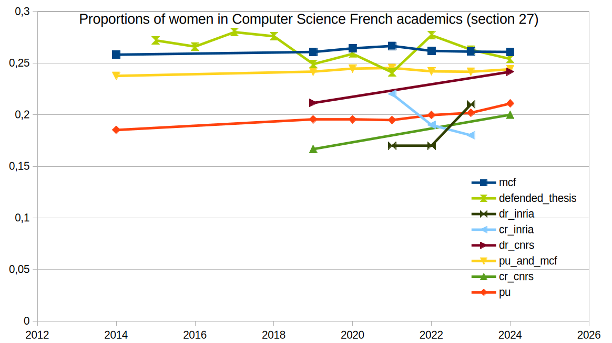
Focusing on the yellow line, we see that for the last 10 years, there is a stable ratio of ~24% of women in permanent positions in the computer sciecne frenc academia.
Evidence 2: the leaky pipeline in science

It is a general fact, for all of STEM and across europe.
Hypothesis 1: biases and stereotypes?
A typical hypothesis to explain this lack of parity are biases and stereotypes. And yes, our brains are biased, no questions asked. On the following picture, it is for instance quite difficult to find out what is changing between the two pictures.

There are biases very early on against women in science: from meta review of 100 studies, “by age 6, children already think that boys are better than girls at computer science and engineering” (Miller et al. 2024)
The culture around us is biased, with clear gender roles, as seen in advertisements.
Campagne de recrutement de l’Éducation Nationale (2011): 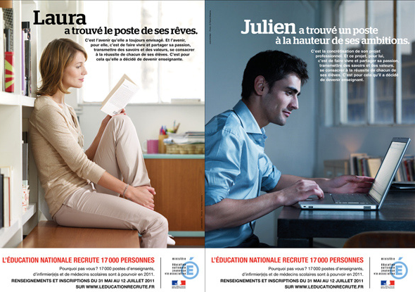
Inspé Nante 2023: 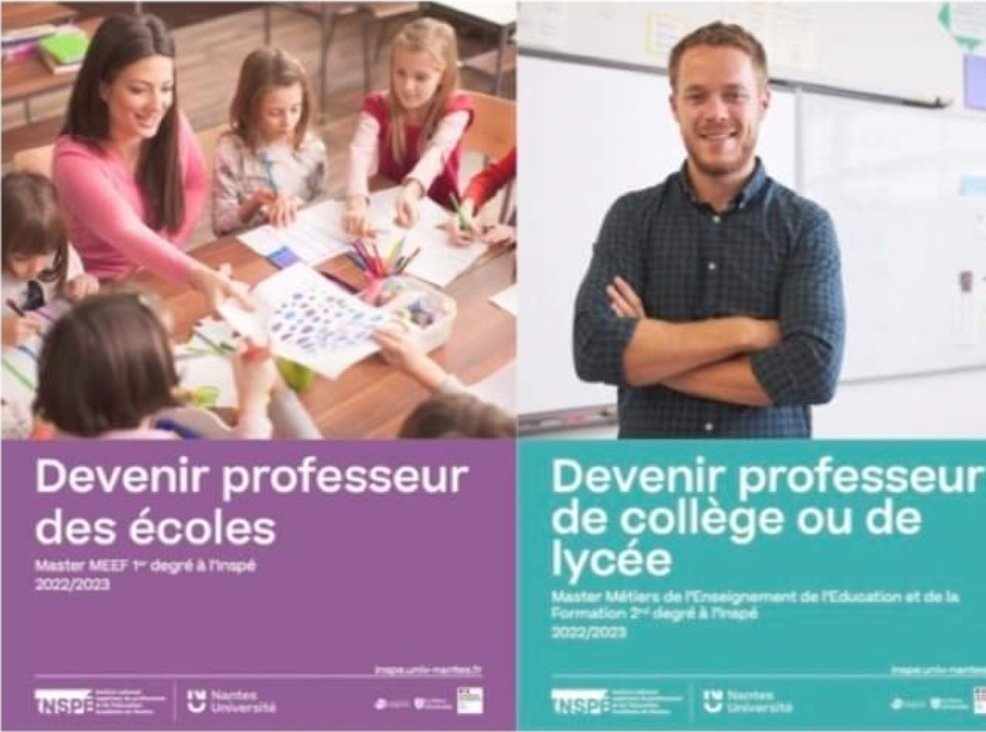
They also come from a very young age, as the exact same toy can be branded as a princess thing for girls and a science thing for boys. 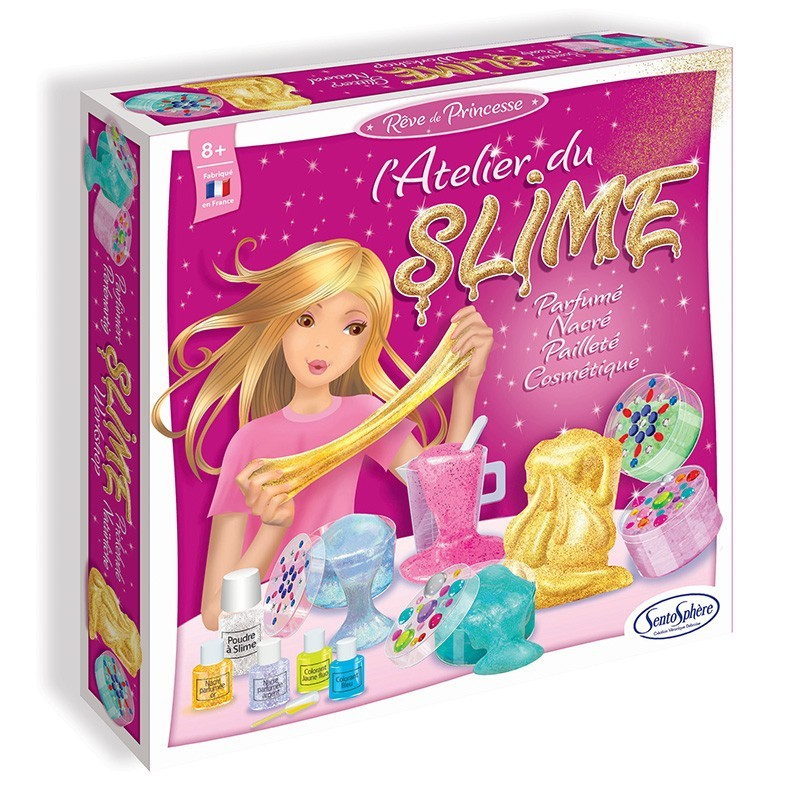
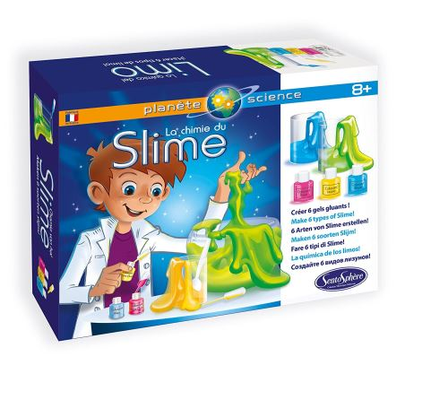
So, it is all explained because women believe they don’t belong in CS?
Counter-evidence: the leaky pipeline is everywhere
There is some counter-evidence to the idea that gender bias for CS explain everything. Notably, the leaky pipeline is everywhere in academia, not just in CS/math/physics/engineering.

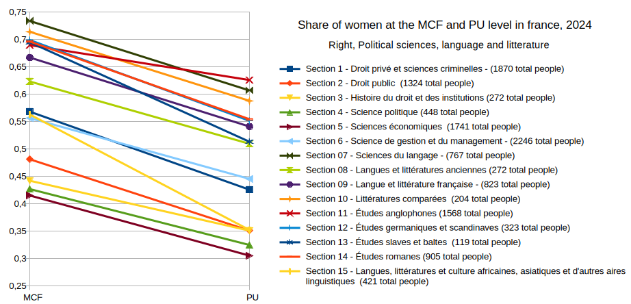 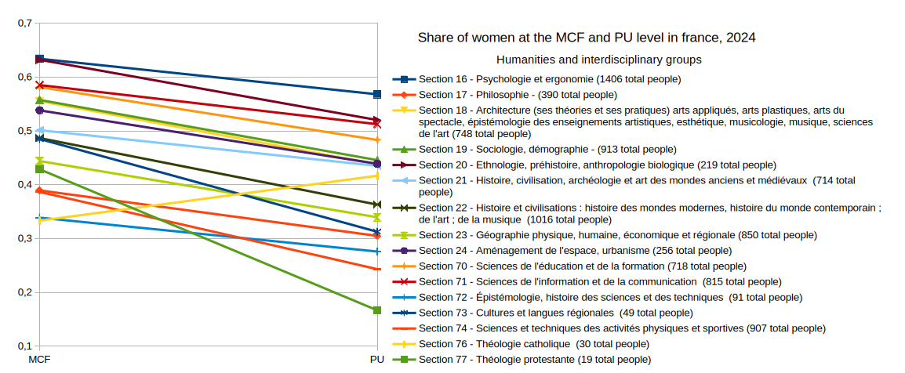 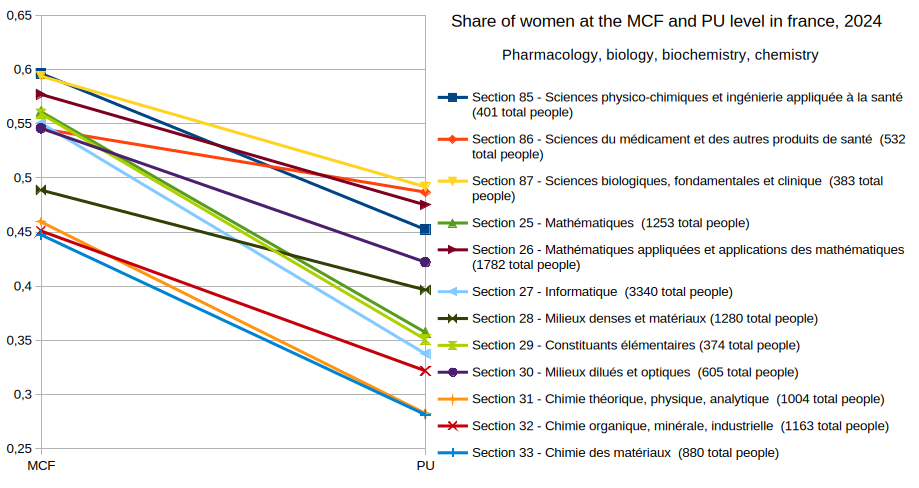 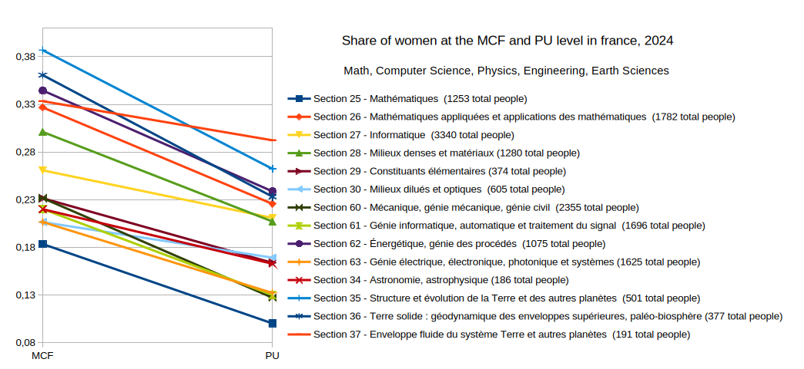
So, there should be more things that explain this phenomenon, it is not linked to CS only.So, let’s explore more facts! (and seemingly change subject, but bear with me!)
Unwell being
Evidence 3: depression
16 studies wordwide, 24% of depression among phd students (Satinsky et al. 2021)

(TBC with 5/7% general population, and 13/15% for young adults)
Evidence 4: overwork
From a 6000 phd student survey by nature. (Woolston 2019) 
Evidence 5: everybody is overwhelmed
Wordwide survey (Cerejo, Awati, and Hayward 2020)
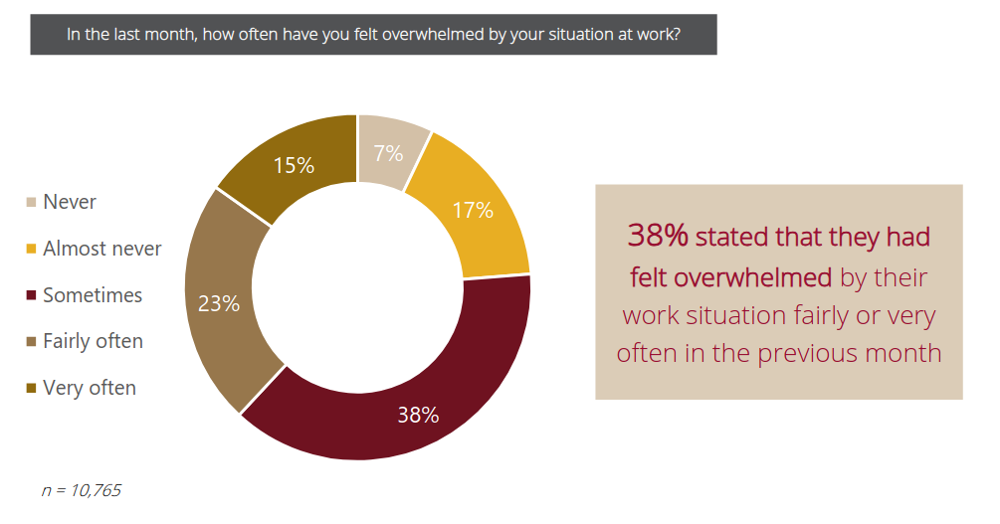
Hypothesis: it is natural, research is by essence hard
Some factors of why it might be hard:
- First time failing (we were never faced with failure in high-school or university, until we arrived in research)
- No tick boxes (there is not right or wrong answer, there might not even be a question)
- Unclimbed mountain (we are doing something never done before)
- Impostor syndrom (we often feel like we are trying to do something to hard for us)
Counter-evidence: who the hell are we kidding?
Yes, research is hard by essence. But, let’s go work from midnight to 8am in a factory, and we’ll see what is also by essence a hard job. The overall unwell being in academia is far from being explained by those basic explanations.
So: can I find some other things that explain the bad experiences, and the gender-gap? Beyond the “research is naturally hard” and “there is just some stereotypes playing against women in CS”?
The missing link
We have seen that:
- there is too much unwell-being
- there is a leaky pipeline
Notice that for the first one, it is the worst at the bottom of the power ladder. For the second one, the share of women is worse and worse the higher we go in the power ladder.
So, there seems to be something linked with power here….
The state of things, looking deeper
The issue is way bigger than it may seem for a lot of people.
Statistics on discriminations
Let us go back to the lack of women, but now, having the notion of power in mind, let’s read the inequal repartition as inequalities w.r.t. access to a higher status.
- men are 2.6 times more likely to become a professor
- somebody without a declared disability is 4.6 times more likely to become a uni staff
- a white person is 6.2 times more likely to become a UK professor than a black person
- somebody with a close relative with a PhD is at least 2.4 times more likely to get a PhD
And more! there are also weight related discrimination, religion related discrimnation, or LGBTQIA+ discrimination.
In France, many people feel they have been discriminated against in academia, based on a wide range of criterions. And it should be noted that those criterions accumulate.


The previous numbers are either correlations, when comparing the relative rates of the corresponding populations, or self declarative. So, while the numbers give a clear representation of the current state of inequalities and how they are lived, they do not tell us why it is this way, with potentially many different factors in play.
The discrimination stems from many active behaviours
A men is way more likely to get a better CV:
- Men spend more time doing research, and leaves the less rewarding work to women. (Winslow 2010) (O’Meara et al. 2017)
- Men self-cite 70 percent more than women (King et al. 2017)
- Female authored papers are less cited (Bendels et al. 2018), and notably less likely to be cited by men (Koffi 2021)
- Having children leads to a significant decline in the number of publications by women, while not affecting the number of publications by men. (Lutter and Schröder 2020)
Further, even with equal CVs, the evaluation is biased:
- A women name on a CV implies evaluation bias (Steinpreis, Anders, and Ritzke 1999)
- The “two-body” problem is only used to refuse women not seen as movable (Rivera 2017)
- Women don’t get credit for group collaborations, while men do. (Sarsons 2017)
- URM faculty received 7% more negative votes and were 44% less likely to receive unanimous votes from P&T committees (Masters-Waage et al. 2024)
- Career breaks are discriminated against in CVs. (Kristal et al. 2023)
Men are gate-keeping
The worst thing is that men are in fact actively (wether counciously or incouncisouly) fighting back against change.
The french 2015 reform, where a share of at least 40% women was
imposed on hiring committee, in fact had negative impact on STEM fields,
where women were judged more harshly. (Deschamps 2024) 
the negative effect of the reform is concentrated in committees headed by men, this result seems driven by the reaction of men to the reform
male evaluators become less favorable toward female candidates as soon as a female evaluator joins the committee (Bagues, Sylos-Labini, and Zinovyeva 2017)
-> So, the people with privileges have many behaviours that enforce those privilege, up to gate-keeping.
All this is evidence based: fun fact, you are more likely to refuse those facts if you are a man! (Handley et al. 2015)
In fact, it is often that our brains don’t see some things (remember the previous illusion), and it can be very hard to finally see them. But, we need to see more things to unlock the final piece of the puzzle.
The magical hidding glasses, by Privileged Inc (TM)
Is there anything striking about this image?
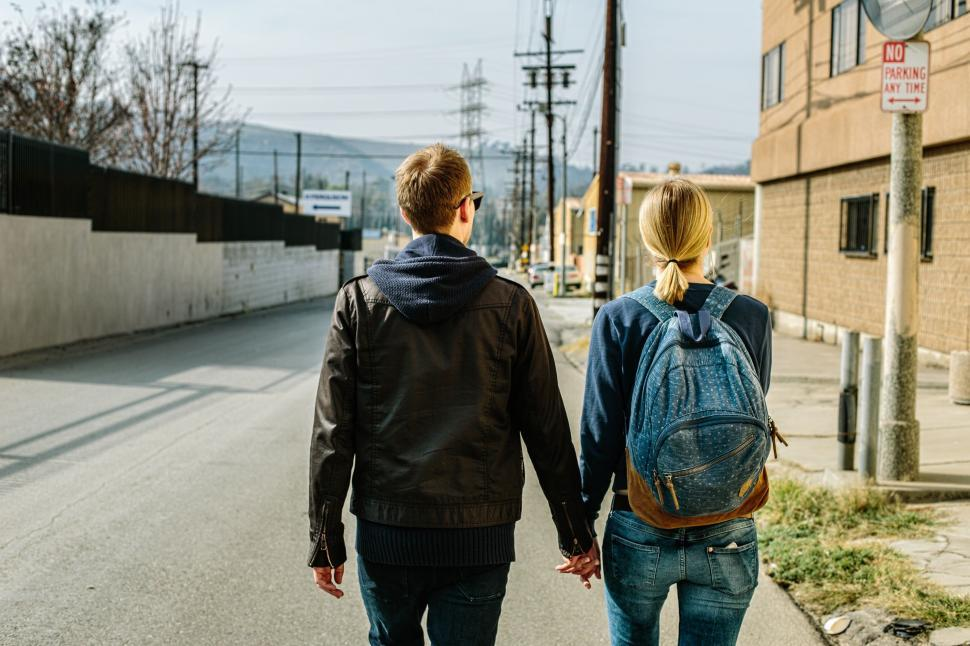
And this one?
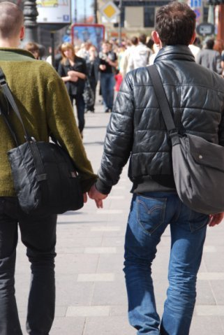
For heteorsexual, holding hands is not a question, it is taken for granted. For an homosexual couple, it feels widely different, you see the looks of some people, questioning stare, judgind stare. And we can feel threatened. It is factually a risk.
-> If you are not the victim of a prejudice, we don’t see it. We might not even see it is a privilege!
It is harder for an homosexual in a relationship to talk at work about what they did last weekend, whitout having to do a coming out.
If a LGBT person don’t feel that they can do their coming out at the lab, their life is concretely more difficult there.
So, with our glasses off, it is time to tackle the omnipresent “invisible” phenomenom.
Statistics on harassment
It is everywhere
The evidence is overwhelming, sexual-harassment (which incllude sexual coercion, unwanted sexual attention, but also gender harassment, any putdown or hostility based on gender) is everywhere.
Wordwide survey: 
A massive consensus study report from the US national academies of
sciences, engineering and medecine. 


It targets many groups differently

Since their arrivals in french higher education, the share of students target of a sexual assault or rape, often reiterated, is 24% of women, 9% of men and 33% of transgenders/non binaries/queers (MILDECA, Mission interministérielle de lutte contre les drogues et les conduites addictives. Laurent Bègue-Shankland, Sebastian Roché, Philippe Arvers 2024)

Of course it has consequences, people are quitting, subperforming


The roots of it all
Power relations and competition
power imbalances foster and sustain sexual-harassment (Benya, Widnall, and Johnson 2018) (Zara et al. 2024) (Bergeron et al. 2025), and in fact other form of harassments and discriminations (Dhume and Roberti-Lintermans 2024)
And we have strong power imbalances in academia, so much so that: “the academic workplace has the second highest rate of sexual harassment at 58 percent (the military has the high-est rate at 69 percent) when comparing it with military, private sector, and the government” (Benya, Widnall, and Johnson 2018)
Tying it all together
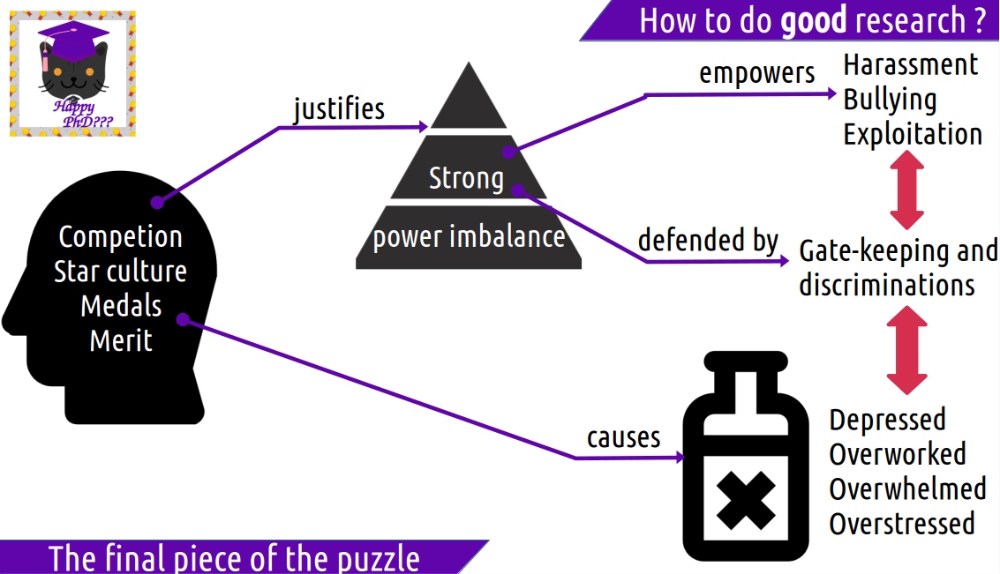
Strong power and domination relations
=defended by=> discrimnination: people in power actively discriminating to keep their power, increasing and repeating the effect of discriminations from society
|
worsened by
|
v
=empowers=> a space rife with harassment, from too common gender-harassment to sexual assault
-> harassment being one of the bullying technique used by people to rise in the competition, and kick out people
=justified by=> many lies: merit, medals, star culture
which in turn =causes=> competition, everybody depressed, overworked and overstressed by the competition
Is all this an issue?
Ok, first of, morally, of course. Right?
But, if it is really needed, some additional arguments.
Philosophy
It is broadly recognized that science is unethical when it involves misstreating human beings in experiments.
But, wait. Should’nt this be ” science is unethical when it involves misstreating human beings”. Aren’t colleagues, no matter there position (permanent, PhD), their beliefs, their gender, their whatever, human beings.
In our labs where harassment is riffed, science is unethical, and there is a dire need for change
A lack of diversity leads to biased and dangerous science
- airbags systems have been designed historcally for men body shapes, leading to less chances for women to survive car crashes
- medicine is dosed for men, with few womens in cohorts (19% for antiviral, 38% for vaccins, 11% for aids)
- women have distinct symptoms sometimes - yentl syndrom for cardiovascular diceases (women with such conditions have 10% more chances of dying when arriving at the hospital)
- LLM with racist or sexist bias, now deployed in companies to filter CVs.
Diversity breads inovation!
publications by mixed-gender teams are more cited (Campbell et al. 2013) science by mixed-gender teams is better (though underrepresetend, significantly more novel and impactfull) (Yang et al. 2022) “diversity in inputs by author ethnicity, location, and references leads to greater contributions to science as measured by impact factors and citations.” (Freeman and Huang 2015) Diverse scholars are more innovative, but their work is taken up by others less than it should be (Hofstra et al. 2020)
Act
Three different point of view:
- individual: when we wonder what women lacks -> mentoring, networking
- societal: when it is not related to academia: help child care, part time dispositives
- organisational: institutions are producing inequalities, they must take action, to fight gender harassment, inclusivity. fight against stereotypes, quotas
Institutions do not do enough: do not adress the most common form of harassment (gender-harassment), provide report procedure opaque (He et al. 2024) and inefficient, leading to a feeling of betrayal (Bergeron et al. 2025), and often focused on protecting the image of the institution (Faniko et al. 2021). Universities focus on following the law meant to reduce discrimination, which had little impact on harassment. (Benya, Widnall, and Johnson 2018) Most targets of harassment don’t report issues. (Lipinsky et al. 2022)
Actually, scratch that, a fourth point of view: * ours. We do the research, we are part of this toxic culture, and we have power over it. We can be the change.
And, as a global change is needed, we must be part of it, it must come from us:
“A systemwide change to the culture and climate in higher education is required to prevent and effectively address all three forms of sexual harassment.” (Benya, Widnall, and Johnson 2018)
We need to focus on broad cultural change (Johnson and Hoover 2015)
Step 1: don’t be shitheads
It is some times easier to change behaviours than beliefs. So, while I would dream to not have to say such basic things, here is a small don’t do it list.
The basics:
- As a general rule, don’t touch or be very close to people at the workplace
- Don’t comment on the physical appearance of people
- Avoid one on one meetings with subordinates outside of the worplace
- Don’t try to date your students
- Don’t ever say somebody does not belong here because of X or Y
- Don’t make general comments about some group X having some supposed characteristics
- …
Step 2: question the toxic culture, spread a better mentality
42% of PhD students think it’s normal to suffer mentally. (Hazell et al. 2021)
50% of international phd don’t feel they can talk about not pursuing academia (Woolston 2019)
Relieve the pressure :
- It’s normal to not work outside of the office.
- It’s normal if research is not my whole life.
- It’s ok if I don’t publish one more paper this year.
- It’s ok if I go on long vacations.
- It’s ok if I don’t want to pursue research after my PhD.
- It’s ok if I am not doing a permanent crunch.
- It’s ok to not be « brillant »
In fact, supporting this “brillant” mentally, increases the biases against women: they are discriminated against for position of power, of excellency.

“a strong adhesion to the meritocratuc ideal forte à l’idéal méritocratique – that is the belief in a hiring system based on individual merit online - also arises as a potential source of resistance against egalitarian measures”. (Faniko et al. 2021)
Step 3: Face the truth
Facts are too often ignored: “The interview responses demonstrate that the behavior of male colleagues, whom higher-ranking faculty or administrators perceived as “superstars” in their particular substantive area, was often minimized or ignored.” (Benya, Widnall, and Johnson 2018)
Step 4: recognize what is going on
Look at problematic situations and see them as problematic.
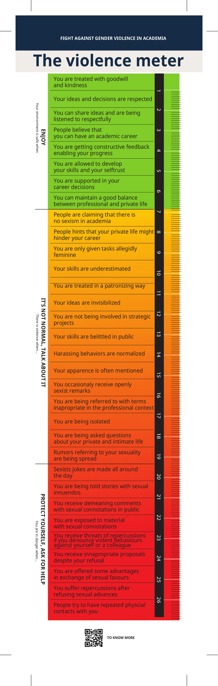
https://didthisreallyhappen.net/
Step 5: recognize what is going on
Don’t be a passive bystander.
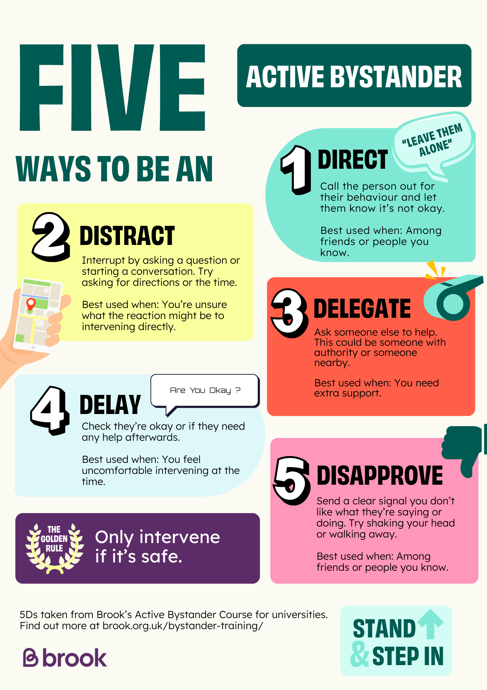
BUT: don’t forget to protect yourself, it might be dangerous to act in positions of precarity. The people with a permanent position can more easily react and confront with less risks, and in fact, because it is easier for them, they can be seen as even more responsable to act.
Step 6: train yourself to answer back
Answers to widespread myths:
“risk of false accusations” - a 10 year study at a university evaluated that between 2 to 10% of accusations were false ones (Lisak et al. 2010), To be compared with the omipresence of agregations, maybe we should stop what has been proved to destroy people, rather than stop trying because of something that rarely happens, and is in fact detected (remember that in many cases, accusers have many forms of proofs, emails, text messages, witnesses, and that agressors often do many others)
“we are now discriminiting white men” - No, we are trying to remove privileges. The French revolution was not “discriminating noble mens” damnit.
“We can’t say anything anymore” - It is actually the converse. People that were silenced for too long can finally speak up and try to be heard.
“Quotas are unfair and breaks merit based hiring” - there is not merit currently. If I win a running race against somebody carrying a 50kg backpack, where is my merit exactly?
“it’s just a joke” - recall that all the different levels of violence support one another, and that the lower level support and enable worse things. Violent people are using your “just a joke” to justify their behaviour. Who are you making you laugh?

“sexual coercion never took place without unwanted sexual attention and gender harass- ment.” (Benya, Widnall, and Johnson 2018)
“the most potent predictor of sexual harassment is organizational climate—the degree to which those in the organization perceive that sexual harassment is or is not tolerated.” (Benya, Widnall, and Johnson 2018)
Everywhere, question if we can’t do better
PhD advisors
Follow mentoring trainings, that do take into account power imbalance. Favor co-supervision rather than one-to-one. Give ressources to your students, on possible careers, local listeners. Be early on feedback and don’t impose any crunch. Feel responsible (wich you legally are) for the wellbeing of your students. Emancipate students, don’t exploit them.
And when doing the committee thesis invitation, care about inequalities and pressure.
Men inviting women are putting pressure on women, and that participates to the fact that whitin owmen, the repartition is horrible.
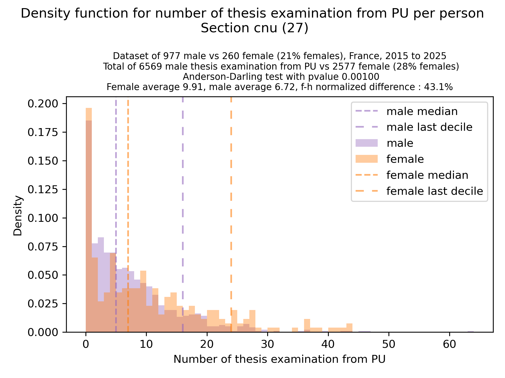
Idea - always include in your invitation mails for women : “If you have more than 2 or 3 thesis committees already planned this year, please decline this invitation.”
Also, see https://egalite-fh.irisa.fr/presentation-recommandations/comites-de-selection-combien-dinvitations-accepter/ for how many committees it is reasonable to go to as a woman, and what kind of invitation mails should be avoided.
Department/lab heads
- Frequent climate surveys update
- Include “whithin” the usual scientific seminar talks on this. (if in need of inspiration https://egalite-fh.irisa.fr/animation/seminaire-fifty-fifty/)
- Impose mentoring training, diversity workshop, bystander training
- Reduce hierarchical structures, diffuse power
Hiring
bias training? The efficiency of implicit-association training impact is unclear.
See e.g. the study at Berkley: 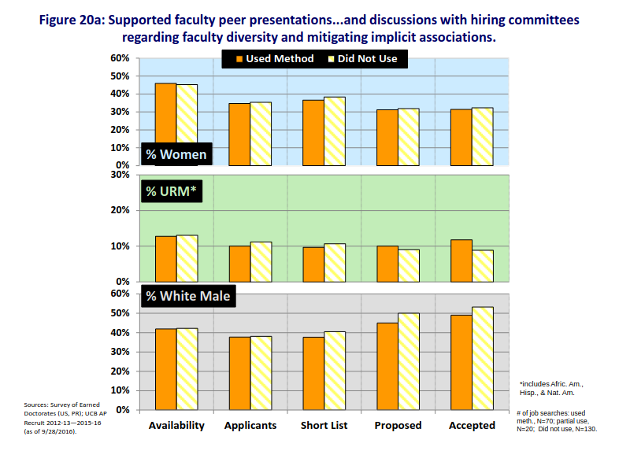
But, between 2017 and 2022, the Astro3d center reached parity, from 38% to 50%. (Kewley et al. 2023)
Things to try!
- have a women for president, but a men for the administrative part (sending out invitations, doing the planing, etc) (to fight against the male president backlash (Deschamps 2024))
- have clear goals and general agreement on the diversity issue and discriminations. (Goulden et al. 2019)
- when possible, shape the job description to target diversity (Goulden et al. 2019)
- ask for CVs without dates, only experience lengths (Kristal et al. 2023) (Behavioural Insights Team 2021)
- agree before hands on criterion and use rubrics (but be careful, a rubric can in itself discriminate, if based on something unequally easy to do) (Culpepper et al. 2023) (Behavioural Insights Team 2021)
- have a jury member be responsible for highlightings whenever a new criterion appears or disappear when evaluating a person.
- evaluate speech time repartition in jurys? (http://arementalkingtoomuch.com/) It is an objective feedback that everybody can take home and reflect on, but also a lacking data point.
- for people who will be teaching, include a question on what they would do in front of a discriminating situation among students: ‘A bachelor male student does not want to do a group project with a female student, stating that women are bad at computer science, how do you answer them?’ (aiming for skill-based evaluation and awareness of those issue (Behavioural Insights Team 2021))
And maybe, some crazy ideas
- explicit quotas, to restore some form of merit?
- abolish prizes?
- abolish one-to-one thesis supervision?
- push for randomized based hiring? (make a pool of candidates passing requirments to be a good researcher, then random draw)
When the worst is for you: small worlds on how to survive and get through it
The major focus of this talk has been to prevent the issues and focus on global change. If you are the target of something, the main first advice is: do not isolate yourself, you will always find allies in the lab.
Some options:
- find other person from your group/department/lab that are talking out on this are good contact point to discuss any issue you may have, or even issues for which you are unsure you may have.
- union are historically the first one who stood out against all this, they can be good contact points.
- it is a good idea to document what is happening to you, even small things, mails, messages, your emotional state after a meeting witnessed by other people. Most harassment cases have in fact many evidence to build on. This will give you options later on.
- head of labs/department must offer you options (remind them that they are legally responsible for your health at the workplace): even if your harasser is not officially condemned, the harasser can isolated from the research activity of the lab, the seminars, the team meals, etc etc. If the lab is not willing to help reduce the ease with which the harasser can act, you should at least be offered a new workplace where you would be safe, potentially helped in finding new advisors if the issue come from them.
- labs and universities have dedicated ressources, not all efficient of course. But, a formal reporting mechanism can be the only way to get a final decision against an harasser.
- whenever confiding in somebody, do check that they are ok with the idea of respecting your boundaries, and not taking any action on this subject without your clear consent. You must be the one in control of your situation. (this is were some universities are doing an horrible job, sometimes even deanonymizing complaints).
- remember, it is not your fault.
This cannot be an extensive list, but the actions mentioned here should already give you contact points that will give more extensive advices. Some contact points also exists and are worth mentioning, notably https://clasches.fr/ and https://www.sos-homophobie.org/
Final words
Bad things are here. And things might even be worthening soon, because we are still victim from the bad things done outside.

But, we are researchers. So, let’s be researchers. Let’s solve this problem!
And if you feel disconfort on all this, be a researcher. Take this new data point, and question it. Is this disconfort what so many others feels all the time?
Side notes and answers to some received question during talks
- there is a so-called queen bee effect, where in places dominated by men, women at the top of the hierarchy can be archer than men. But, this effect is mostly created by gender-stereotypical expectations and megative experiences lived through their career by those women. (Faniko, Ellemers, and Derks 2021)